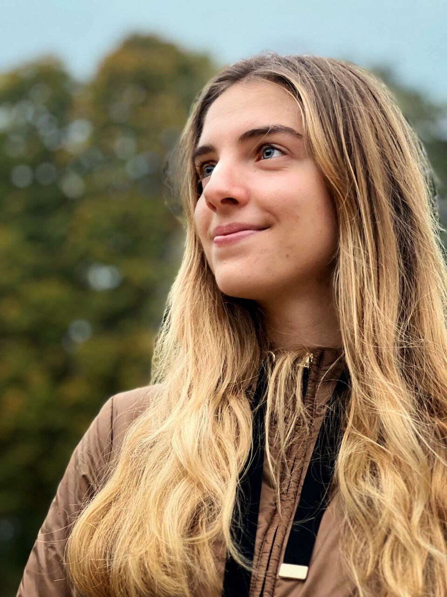

Hi! I'm a student from Venice with a passion for drawing, photography and visual design.
Despite attending a scientific high school, I pursued my artistic interests through various projects,
including creating business cards for local businesses, taking photography courses in Iceland, and patecipating to video-making contests.
The variety of skills and experiences have prepared me to take on new challenges in the world of graphic design.
With a keen eye for detail and a dedication to quality, I'm ready to help you bring your creative vision to life.
Skills
Experience
Education
- UI/UX
Designing Web interfaces - Graphic and Visual Design
Creating visual appealing and communicative designs, used in various mediums such as print, digital, and video. - Product design
Developing functional and aesthetically pleasing products.
- 2022 - Current
Graphic and web designer freelence - 2018 - 2019
School-work alternation (Alternanza Scuola Lavoro) in production and videomaking - 2017
Photography course in Iceland
- Current
Studying product and visual design - 2019-2022
Environmental engineerign at UniTrento - 2014-2019
Scientific high school diploma
